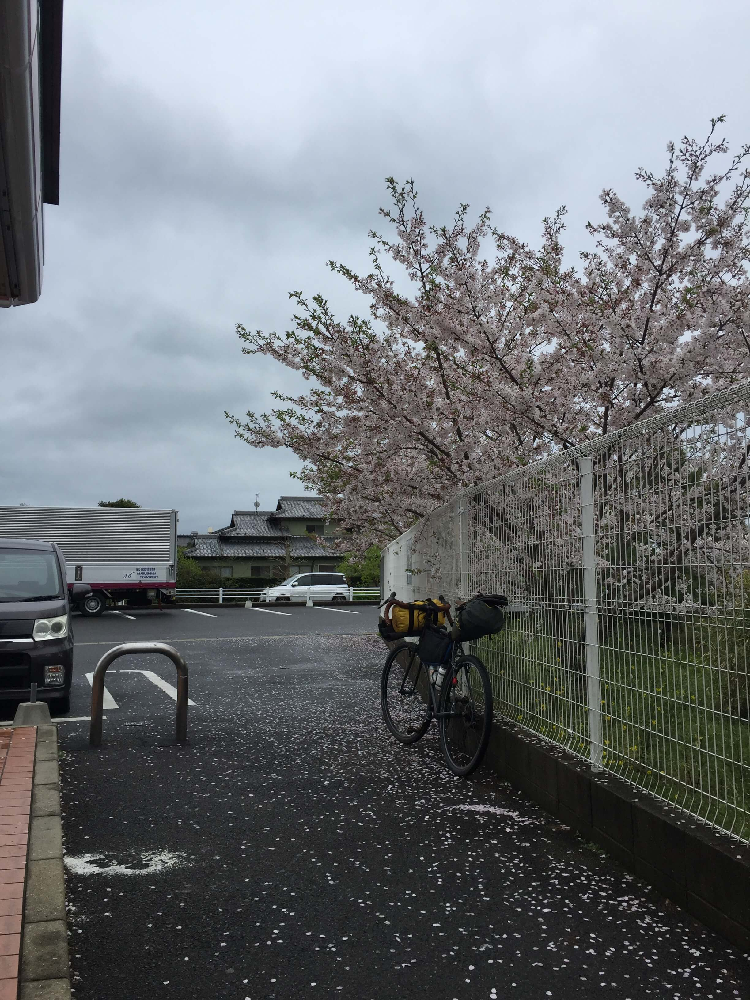
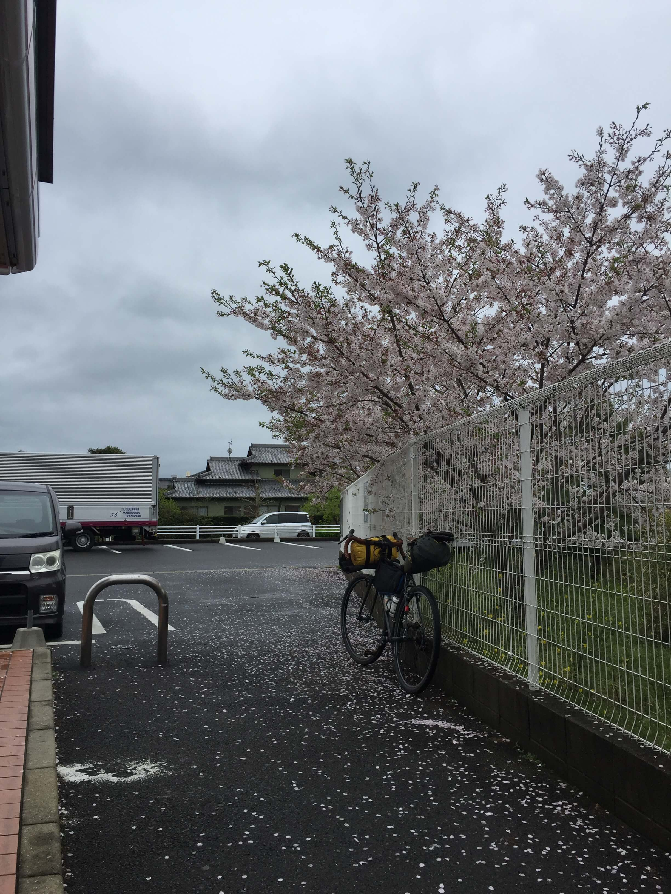
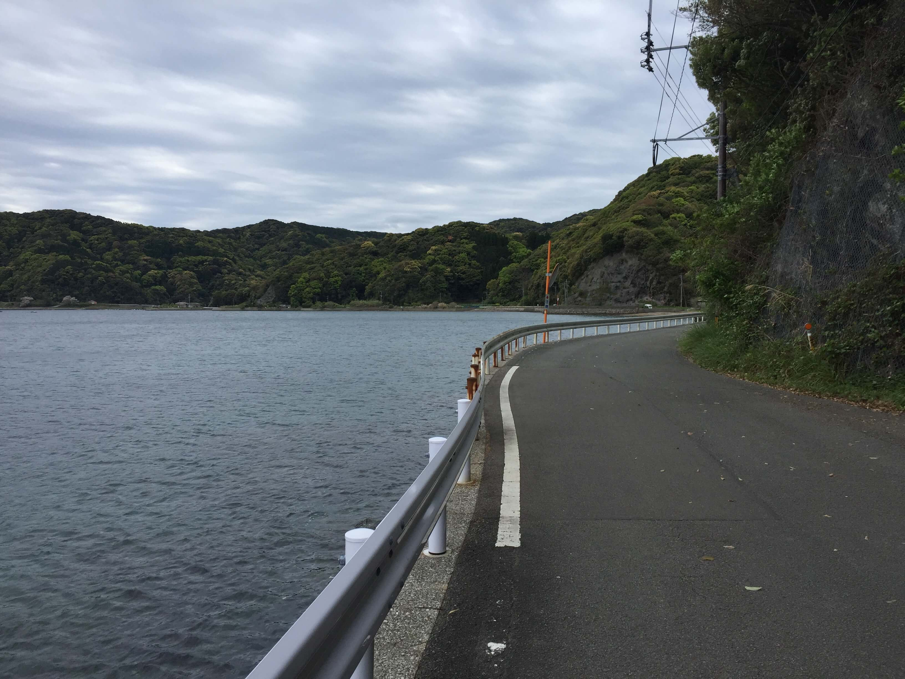
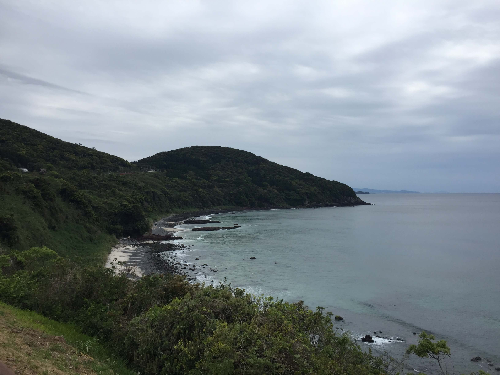
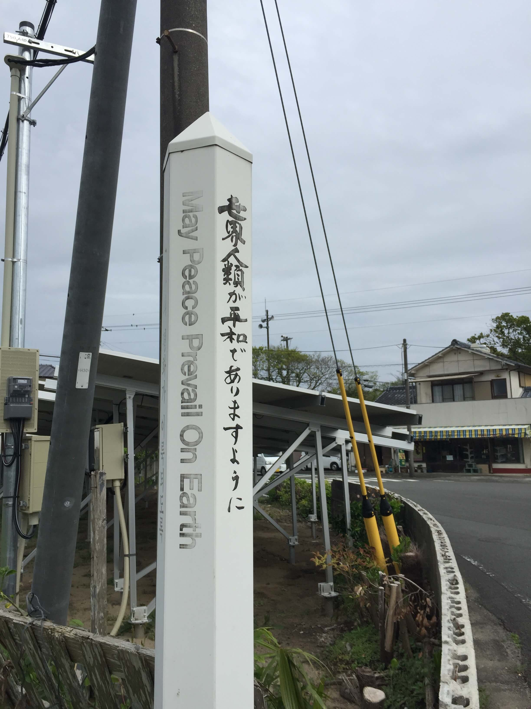
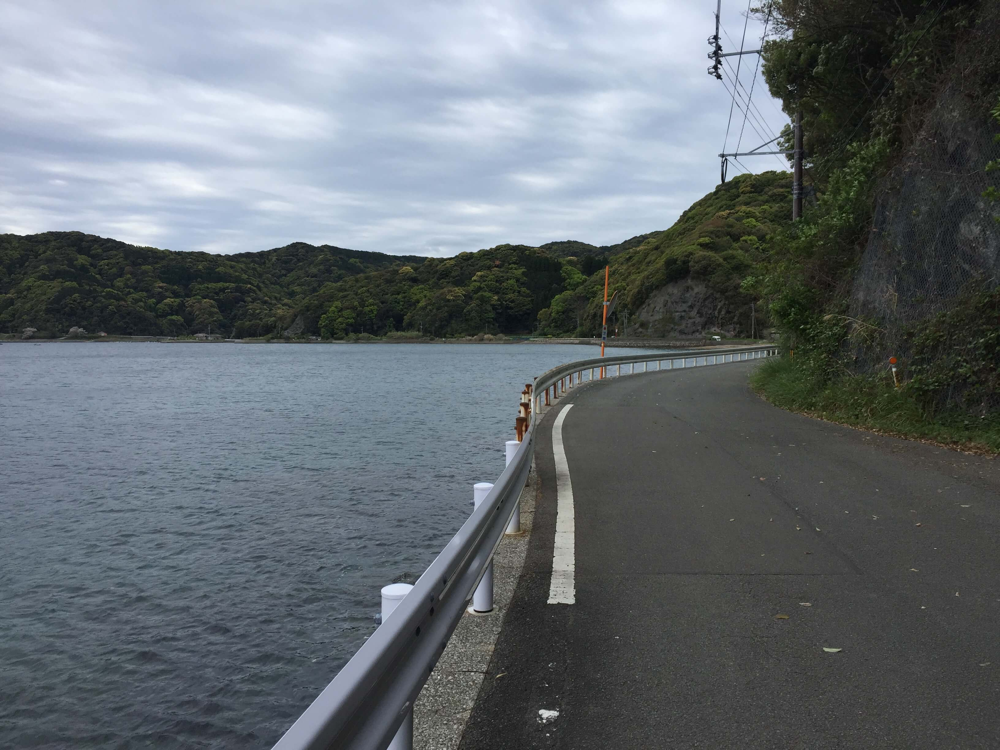
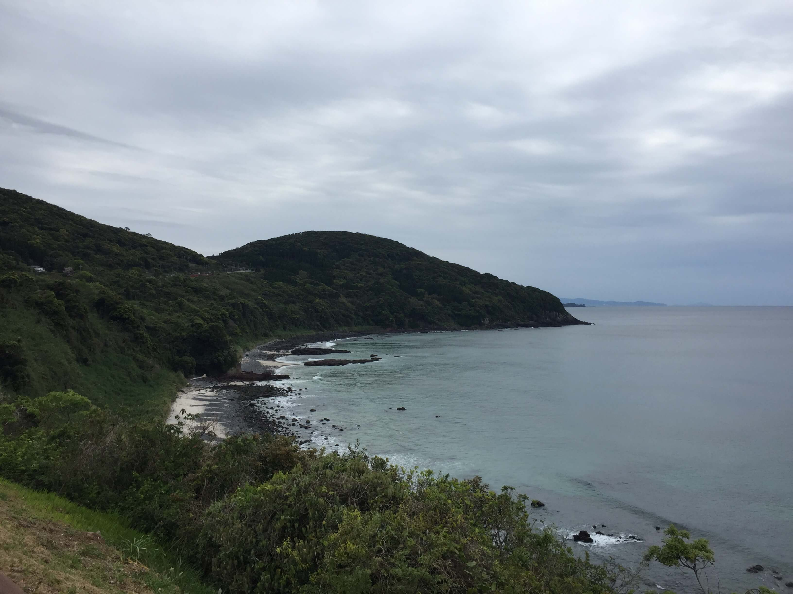
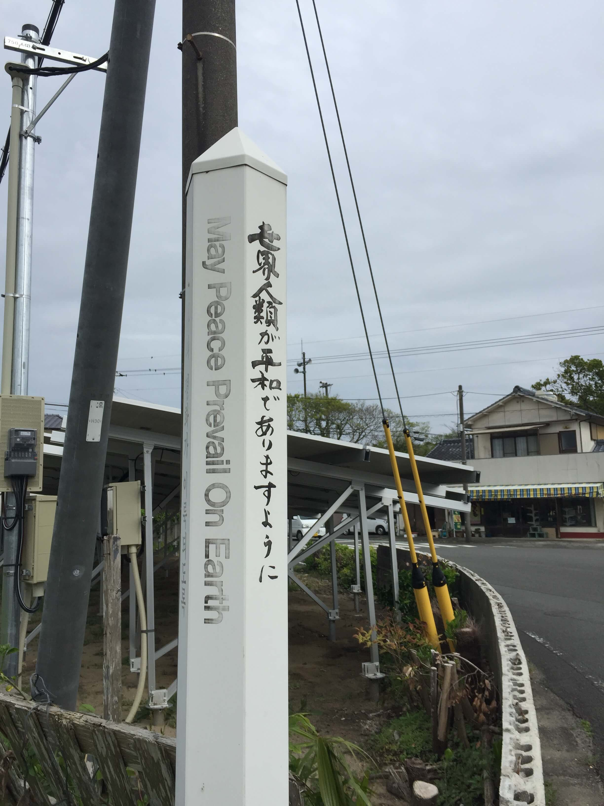

Hyaku-meizan1
I decided to travel to Japan and ride my bike from the southern cape Sata to the northernmost point in Japan, Cape Soya. It took me 2 months to complete the 4300km ride. I wish I had taken more pictures from the people I met along the way, but it often felt intrusive to take out my phone so this page is mostly photos from the national parks and roads I rode on.
If you ever decide to visit Japan, these places are all great: Sapporo, Aso-Kuju national park, all of Skikoku if you're by bike or hiking the temple pilgrimage, Aomori, Tottori, Omine-san/Nara mountains, Ise-Shima, Fujiyoshida, Bandai Asahi national park, Matsumoto, Nagasaki, Osore-san, Shiretoko, Osaka, all of Hokkaido.
 


 




